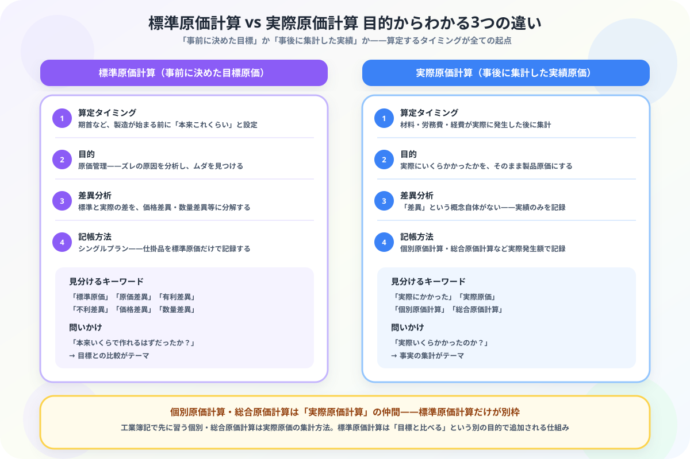

標準原価計算と実際原価計算の違いがわからない人へ
目的からスッキリ整理する図解ガイド
- 両方とも「製品原価を計算する」目的は同じ——だから何が違うのか混乱しやすい
- 本質の違いは算定するタイミング——標準原価計算は「事前に決めた目標」、実際原価計算は「事後に集計した実績」
- 個別原価計算・総合原価計算は実際原価計算の仲間——標準原価計算だけが「差異分析」という別の目的を持つ
- 実際原価計算には「差異」という概念自体が存在しない——差異分析は標準原価計算だけの機能
こんにちは、大谷です！
個別原価計算・総合原価計算を頑張って乗り越えた直後に「標準原価計算」が出てきたとき、僕は「え、また新しい原価計算……？さっきまでのは一体何だったの？」と本気で混乱しました。しかも問題文には当たり前のように「実際原価計算」という言葉まで出てきて、「どっちがどっちだっけ」と手が止まる。この“既視感なのに違う”感じが、この論点の一番のわかりにくさだと思います。
でも実は、境界線はたった1つ。「原価を計算するタイミングが、製造の前か後か」——これさえ押さえれば、個別・総合原価計算がどちらの仲間なのかまで芋づる式に整理できます。今日はそのシンプルな軸を、一緒に整理していきましょう！
また、記事の末尾のほうにある【いいねボタン】をポチッと押してもらえると、めちゃくちゃ嬉しいです！
❓ 算定タイミングの違い——「製造前に決めるか」「製造後に集計するか」
標準原価計算と実際原価計算はどちらも「製品原価を計算する」という目的は同じですが、原価を算定するタイミングがまったく異なります。この1点を押さえるだけで、他のすべての違いが理解できます。

🧩 ① 個別原価計算・総合原価計算はどっちの仲間？——実際原価計算のグループに属する
ここが一番混乱しやすいポイントです。すでに学んだ個別原価計算と総合原価計算は、どちらも「実際に発生した原価をどう集計するか」の方法なので、実際原価計算というグループに含まれます。
| グループ | 含まれる計算方法 | 集計の単位 |
|---|---|---|
| 実際原価計算 | 個別原価計算 | 製造指図書ごと（注文ごと） |
| 総合原価計算 | 一定期間ごと（大量生産） | |
| 標準原価計算 | （上記いずれかの実際原価と比較する形で追加） | 目標と実績の差異 |
📊 ② 目的の違い——原価管理か、正確な実績集計か
標準原価計算の目的は原価管理です。目標とのズレを分析することで、材料を使いすぎていないか、作業に時間がかかりすぎていないかを把握し、改善につなげます。実際原価計算の目的は、実際にかかった金額を正確に製品原価へ反映することです。
💴 ③ 差異分析の有無——「差異」という概念があるのは標準原価計算だけ
製品1個あたりの標準原価は1,000円。当月完成品100個分の標準原価は100,000円、実際原価は108,000円だった。
実際の方が多くかかっているため、8,000円の不利差異が発生している。
もしこれが実際原価計算だけの世界なら、「実際原価108,000円が製品原価」で終わりです。標準原価計算は、ここに標準原価100,000円という比較対象を追加することで、初めて「8,000円多くかかった」という差異が見えるようになります。
📝 ④ 記帳方法の違い——シングルプランか、実際発生額そのままか
標準原価計算では、仕掛品勘定を標準原価だけで記録するシングルプランという方法が使われます。実際原価計算では、実際に発生した金額をそのまま仕掛品・製品・売上原価に流していきます。
同じ「完成した」という取引でも、標準原価計算では目標の金額（100,000円）で記帳し、差額の8,000円は原価差異勘定へ振り替えます。実際原価計算ではそのまま実際発生額（108,000円）で記帳します。
🔍 ⑤ 迷ったときの見分け方——問題文のこの言葉を探す
| 問題文の表現 | 使う考え方 |
|---|---|
| 「標準原価」「原価差異」「有利差異・不利差異」「価格差異・数量差異」 | 標準原価計算 |
| 「実際にかかった」「製造指図書ごとに」「一定期間の完成品と月末仕掛品」 | 実際原価計算（個別・総合原価計算） |
📋 まとめ：標準原価計算 vs 実際原価計算 早見表
「タイミングの違い」さえ見抜けば、標準と実際はもう混同しません
製造前に決めるか、製造後に集計するか——このたった1つの軸を手に入れたあなたは、個別・総合原価計算がどちらの仲間かも、差異分析がなぜ標準原価計算だけの話なのかも、もう迷わず説明できます。この記事が「あ、そういうことか！」につながったら、僕の執筆のモチベーション維持のために、この下にある【いいねボタン】をポチッと押してもらえると、めちゃくちゃ嬉しいです！
Study Questで今日の学習時間を記録して、簿記2級マスターへの一歩を刻んでおきましょう。